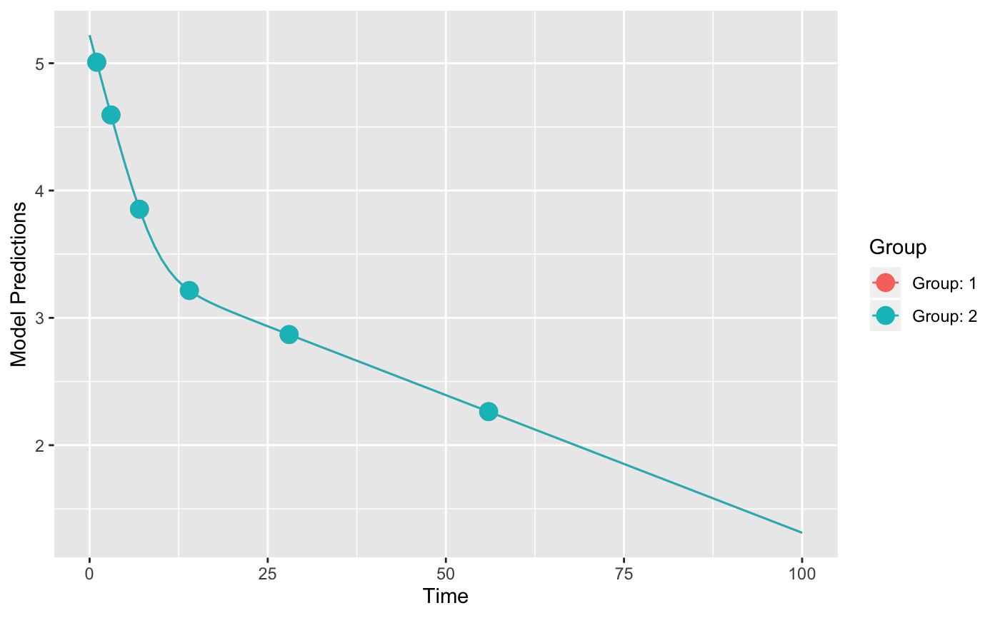
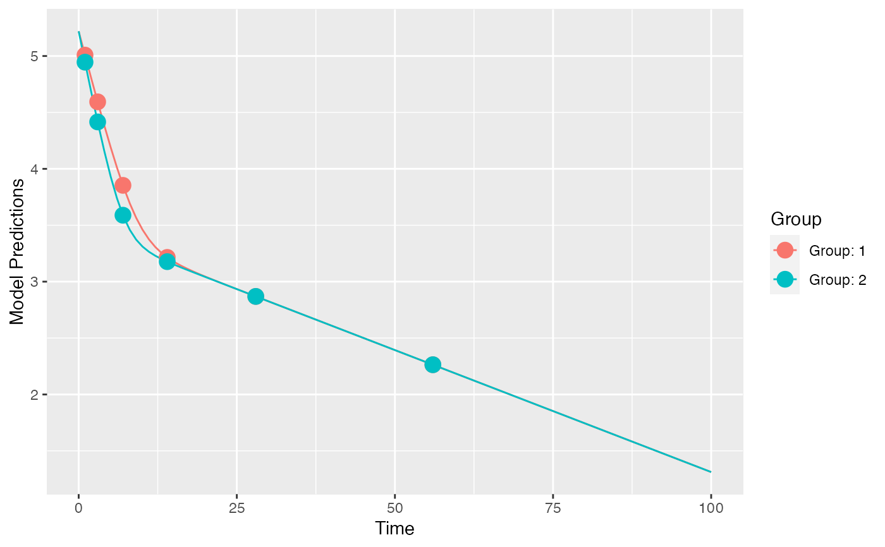

Evaluate the power of a design to estimate a parameter value different than some assumed value (often the assumed value is zero). The power is calculated using the linear Wald test and the the design is defined in a poped database.
evaluate_power( poped.db, bpop_idx, h0 = 0, alpha = 0.05, power = 0.8, twoSided = TRUE, find_min_n = TRUE, fim = NULL, out = NULL, ... )
| poped.db | A poped database |
|---|---|
| bpop_idx | Index for an unfixed population parameter (bpop) for which the power should be evaluated for being different than the null hypothesis (h0). |
| h0 | The null hypothesized value for the parameter. |
| alpha | Type 1 error. |
| power | Targeted power. |
| twoSided | Is this a two-sided test. |
| find_min_n | Should the function compute the minimum n needed (given the current design) to achieve the desired power? |
| fim | Provide the FIM from a previous calculation |
| out | provide output from a previous calculation (e.g., calc_ofv_and_fim, ...) |
| ... | Extra parameters passed to |
A list of elements evaluating the current design including the power.
Retout, S., Comets, E., Samson, A., and Mentre, F. (2007). Design in nonlinear mixed effects models: Optimization using the Fedorov-Wynn algorithm and power of the Wald test for binary covariates. Statistics in Medicine, 26(28), 5162-5179. https://doi.org/10.1002/sim.2910.
Ueckert, S., Hennig, S., Nyberg, J., Karlsson, M. O., and Hooker, A. C. (2013). Optimizing disease progression study designs for drug effect discrimination. Journal of Pharmacokinetics and Pharmacodynamics, 40(5), 587-596. https://doi.org/10.1007/s10928-013-9331-3.
Other evaluate_design:
evaluate.fim(),
evaluate_design(),
get_rse(),
model_prediction(),
plot_efficiency_of_windows(),
plot_model_prediction()
# Folowing the examples presented in Retout, 2007 ff <- function(model_switch,xt,parameters,poped.db){ with(as.list(parameters),{ lambda1 <- lam1a if(TREAT==2) lambda1 <- lam1b y=log10(P1*exp(-lambda1*xt)+P2*exp(-lam2*xt)) return(list(y=y,poped.db=poped.db)) }) } sfg <- function(x,a,bpop,b,bocc){ parameters=c(P1=exp(bpop[1]+b[1]), P2=exp(bpop[2]+b[2]), lam1a=exp(bpop[3]+b[3]), lam1b=exp(bpop[3]+bpop[4]+b[3]), lam2=exp(bpop[5]+b[4]), TREAT=a[1]) return(parameters) } poped.db <- create.poped.database(ff_fun = ff, fg_fun = sfg, fError_fun = feps.add, bpop=c(P1=12, P2=8, lam1=-0.7,beta=0,lam2=-3.0), d=c(P1=0.3, P2=0.3, lam1=0.3,lam2=0.3), sigma=c(0.065^2), groupsize=100, m=2, xt=c(1, 3, 7, 14, 28, 56), minxt=0, maxxt=100, a=list(c(TREAT=1),c(TREAT=2))) plot_model_prediction(poped.db)evaluate_design(poped.db)#> $ofv #> [1] 74.52441 #> #> $fim #> P1 P2 lam1 beta lam2 d_P1 #> P1 611.712173 -12.723468 -24.210864 -12.105432 -5.109809 0.000000e+00 #> P2 -12.723468 580.838635 -16.202945 -8.101473 -39.342222 0.000000e+00 #> lam1 -24.210864 -16.202945 648.887537 324.443769 -6.742703 0.000000e+00 #> beta -12.105432 -8.101473 324.443769 324.443769 -3.371351 0.000000e+00 #> lam2 -5.109809 -39.342222 -6.742703 -3.371351 643.716238 0.000000e+00 #> d_P1 0.000000 0.000000 0.000000 0.000000 0.000000 9.354418e+02 #> d_P2 0.000000 0.000000 0.000000 0.000000 0.000000 4.051226e-01 #> d_lam1 0.000000 0.000000 0.000000 0.000000 0.000000 1.465796e+00 #> d_lam2 0.000000 0.000000 0.000000 0.000000 0.000000 6.533665e-02 #> SIGMA[1,1] 0.000000 0.000000 0.000000 0.000000 0.000000 5.831126e+03 #> d_P2 d_lam1 d_lam2 SIGMA[1,1] #> P1 0.0000000 0.0000000 0.000000e+00 0.000 #> P2 0.0000000 0.0000000 0.000000e+00 0.000 #> lam1 0.0000000 0.0000000 0.000000e+00 0.000 #> beta 0.0000000 0.0000000 0.000000e+00 0.000 #> lam2 0.0000000 0.0000000 0.000000e+00 0.000 #> d_P1 0.4051226 1.4657963 6.533665e-02 5831.126 #> d_P2 843.4338997 0.6563403 3.869526e+00 8499.377 #> d_lam1 0.6563403 1052.6375905 1.136601e-01 1889.172 #> d_lam2 3.8695261 0.1136601 1.035926e+03 2335.057 #> SIGMA[1,1] 8499.3770635 1889.1721996 2.335057e+03 11411954.974 #> #> $rse #> P1 P2 lam1 beta lam2 d_P1 #> 0.33728477 0.52006496 7.93579642 0.07851367 1.31669814 10.91610610 #> d_P2 d_lam1 d_lam2 SIGMA[1,1] #> 11.52111962 10.27552547 10.35895352 7.04673895 #>poped.db_2 <- create.poped.database(poped.db,bpop=c(P1=12, P2=8, lam1=-0.7,beta=0.262,lam2=-3.0)) plot_model_prediction(poped.db_2)evaluate_design(poped.db_2)#> $ofv #> [1] 74.54742 #> #> $fim #> P1 P2 lam1 beta lam2 d_P1 #> P1 606.082950 -12.698834 -26.35693 -14.251496 -5.275302 0.000000e+00 #> P2 -12.698834 590.575894 -15.71391 -7.612439 -35.363104 0.000000e+00 #> lam1 -26.356928 -15.713911 647.69637 323.252599 -6.706090 0.000000e+00 #> beta -14.251496 -7.612439 323.25260 323.252599 -3.334739 0.000000e+00 #> lam2 -5.275302 -35.363104 -6.70609 -3.334739 645.343252 0.000000e+00 #> d_P1 0.000000 0.000000 0.00000 0.000000 0.000000 9.184102e+02 #> d_P2 0.000000 0.000000 0.00000 0.000000 0.000000 4.034200e-01 #> d_lam1 0.000000 0.000000 0.00000 0.000000 0.000000 1.748309e+00 #> d_lam2 0.000000 0.000000 0.00000 0.000000 0.000000 6.967871e-02 #> SIGMA[1,1] 0.000000 0.000000 0.00000 0.000000 0.000000 6.355107e+03 #> d_P2 d_lam1 d_lam2 SIGMA[1,1] #> P1 0.0000000 0.0000000 0.000000e+00 0.000 #> P2 0.0000000 0.0000000 0.000000e+00 0.000 #> lam1 0.0000000 0.0000000 0.000000e+00 0.000 #> beta 0.0000000 0.0000000 0.000000e+00 0.000 #> lam2 0.0000000 0.0000000 0.000000e+00 0.000 #> d_P1 0.4034200 1.7483086 6.967871e-02 6355.107 #> d_P2 872.1867153 0.6179178 3.165957e+00 7662.897 #> d_lam1 0.6179178 1048.7800081 1.124325e-01 2004.872 #> d_lam2 3.1659572 0.1124325 1.041176e+03 2204.565 #> SIGMA[1,1] 7662.8965834 2004.8718636 2.204565e+03 11396937.363 #> #> $rse #> P1 P2 lam1 beta lam2 d_P1 d_P2 #> 0.3388993 0.5155216 7.9357907 29.9948348 1.3144681 11.0205784 11.3204964 #> d_lam1 d_lam2 SIGMA[1,1] #> 10.2946079 10.3325269 7.0480558 #>evaluate_power(poped.db_2,bpop_idx = 4)#> $ofv #> [1] 74.54742 #> #> $fim #> [,1] [,2] [,3] [,4] [,5] [,6] #> [1,] 606.082950 -12.698834 -26.35693 -14.251496 -5.275302 0.000000e+00 #> [2,] -12.698834 590.575894 -15.71391 -7.612439 -35.363104 0.000000e+00 #> [3,] -26.356928 -15.713911 647.69637 323.252599 -6.706090 0.000000e+00 #> [4,] -14.251496 -7.612439 323.25260 323.252599 -3.334739 0.000000e+00 #> [5,] -5.275302 -35.363104 -6.70609 -3.334739 645.343252 0.000000e+00 #> [6,] 0.000000 0.000000 0.00000 0.000000 0.000000 9.184102e+02 #> [7,] 0.000000 0.000000 0.00000 0.000000 0.000000 4.034200e-01 #> [8,] 0.000000 0.000000 0.00000 0.000000 0.000000 1.748309e+00 #> [9,] 0.000000 0.000000 0.00000 0.000000 0.000000 6.967871e-02 #> [10,] 0.000000 0.000000 0.00000 0.000000 0.000000 6.355107e+03 #> [,7] [,8] [,9] [,10] #> [1,] 0.0000000 0.0000000 0.000000e+00 0.000 #> [2,] 0.0000000 0.0000000 0.000000e+00 0.000 #> [3,] 0.0000000 0.0000000 0.000000e+00 0.000 #> [4,] 0.0000000 0.0000000 0.000000e+00 0.000 #> [5,] 0.0000000 0.0000000 0.000000e+00 0.000 #> [6,] 0.4034200 1.7483086 6.967871e-02 6355.107 #> [7,] 872.1867153 0.6179178 3.165957e+00 7662.897 #> [8,] 0.6179178 1048.7800081 1.124325e-01 2004.872 #> [9,] 3.1659572 0.1124325 1.041176e+03 2204.565 #> [10,] 7662.8965834 2004.8718636 2.204565e+03 11396937.363 #> #> $rse #> P1 P2 lam1 beta lam2 d_P1 d_P2 #> 0.3388993 0.5155216 7.9357907 29.9948348 1.3144681 11.0205784 11.3204964 #> d_lam1 d_lam2 SIGMA[1,1] #> 10.2946079 10.3325269 7.0480558 #> #> $power #> Value RSE power_pred power_want need_rse min_N_tot #> beta 0.262 29.99483 91.52704 80 35.69408 142 #>